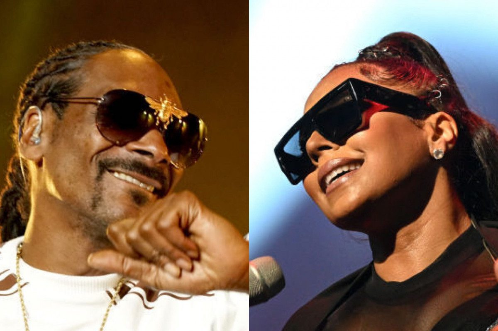

Black Musicians Making Waves in Web3
Image Credits https://www.revolt.tv/article/2023-06-09/307894/black-musicians-making-their-mark-in-web3/
In honor of Black Music Month, we take a look at the artists who are making their mark in Web3. From NFTs to virtual concerts, these musicians are ahead of the game when it comes to exploring the possibilities of blockchain technology and the metaverse.
The Future of Music is Interactive
For decades, music has been a passive form of entertainment. We listen to it, sing along, and dance to it, but we don't really interact with it in a meaningful way. This is changing with Web3, where musicians can create immersive experiences that go beyond the traditional concert or album launch.

Janelle Monáe
Janelle Monáe has been at the forefront of experimenting with Web3 technologies to create unique music experiences. She recently released an NFT album called "Crypto Monáe" that comes with exclusive digital collectibles and behind-the-scenes content.
Sources: NME.com
Hashtags: #JanelleMonae #CryptoMonae #NFT #Web3 #BlackMusicMonth #MusicTech

Lil Nas X
Lil Nas X is no stranger to viral marketing campaigns, and he's taken it to the next level with his virtual concert on Roblox. The concert was a huge success, with over 33 million views, and showcased the potential of virtual concerts as a new revenue stream for musicians.
Sources: Rolling Stone
Hashtags: #LilNasX #VirtualConcert #Roblox #Web3 #BlackMusicMonth #MusicMarketing

Alicia Keys
Alicia Keys is using blockchain technology to fight plagiarism and ensure that musicians get paid for their work. She's partnering with Vezt, a music rights management platform, to create a fan-driven revenue model where fans can own a piece of the song and share in its profits.
Sources: Billboard
Hashtags: #AliciaKeys #Vezt #NFT #Web3 #BlackMusicMonth #MusicIndustry
Diversity and Representation in the Metaverse
One of the benefits of Web3 is the ability to create new worlds and experiences that are inclusive and diverse. For Black musicians, this means having the opportunity to build their own virtual spaces and communities that reflect their culture and identity.

Grimes has been a vocal advocate for the metaverse and the potential it holds for musicians. She's also working on her own virtual world called "Warnymph," which she describes as a "post-human" aesthetic inspired by anime and video games. By creating a space that's unique and boundary-pushing, she's paving the way for other Black musicians to explore the possibilities of the metaverse.
Sources: Forbes
Hashtags: #Grimes #Warnymph #Metaverse #Web3 #BlackMusicMonth #VirtualWorlds

SZA
SZA has been building her own virtual world called "SZA Planet," which she describes as a place where her fans can come together and connect with each other. The world is filled with references to her music and inspirations, and provides a safe and inclusive space for Black fans.
Sources: Forbes
Hashtags: #SZA #SZAPlanet #VirtualWorlds #Web3 #BlackMusicMonth #CommunityBuilding

Kehlani
Kehlani is partnering with the virtual reality company Wave to create a series of concerts that combine live performances with immersive environments. The concerts are a way to bring together her fans in a new and exciting format, while also exploring the possibilities of Web3.
Sources: Billboard
Hashtags: #Kehlani #WaveXR #VirtualReality #Web3 #BlackMusicMonth #MusicTech
Building a Sustainable Future for Black Musicians
Web3 presents many opportunities for Black musicians to take control of their careers and build sustainable revenue streams. By leveraging blockchain technology and the metaverse, they can create new models for ownership, distribution, and monetization that benefit both artists and fans.

Pharrell Williams
Pharrell Williams is the co-founder of Yellowheart, a blockchain platform that allows musicians to sell their music directly to fans without intermediaries. The platform also ensures that artists are fairly compensated for their work and have more control over how their music is distributed and consumed.
Sources: Rolling Stone
Hashtags: #PharrellWilliams #Yellowheart #Blockchain #Web3 #BlackMusicMonth #MusicDistribution

Chad Hugo
Chad Hugo, the other half of the Neptunes and N.E.R.D., is also exploring the potential of blockchain for the music industry. He recently co-founded Multis, a platform that uses blockchain technology to streamline royalty payments and ensure that artists get paid in a timely and transparent manner.
Sources: Billboard
Hashtags: #ChadHugo #Multis #Blockchain #Web3 #BlackMusicMonth #MusicRoyalties

T-Pain
T-Pain is using NFTs to create unique experiences for his fans and generate new revenue streams. He recently sold a collection of NFTs that included exclusive access to his studio, backstage passes, and a dinner with the artist himself. By creating scarcity and unique value propositions, he's showing that NFTs can be more than just digital collectibles.
Sources: Forbes
Hashtags: #TPain #NFT #Web3 #BlackMusicMonth #FanEngagement
Curated by Team Akash.Mittal.Blog
Share on Twitter Share on LinkedIn